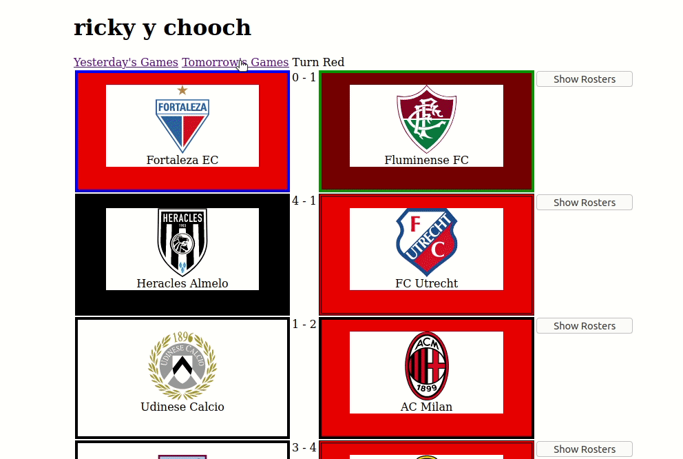

ricky & chucho
🚢SALTCAKED SMOKESTACKS
🦇 Clojure app for footy scores
I wrote a little app in clojure.
Here it is
. The source is on Github
here
.

my simple server-side app
is just a front end for the tremendous
football-data api